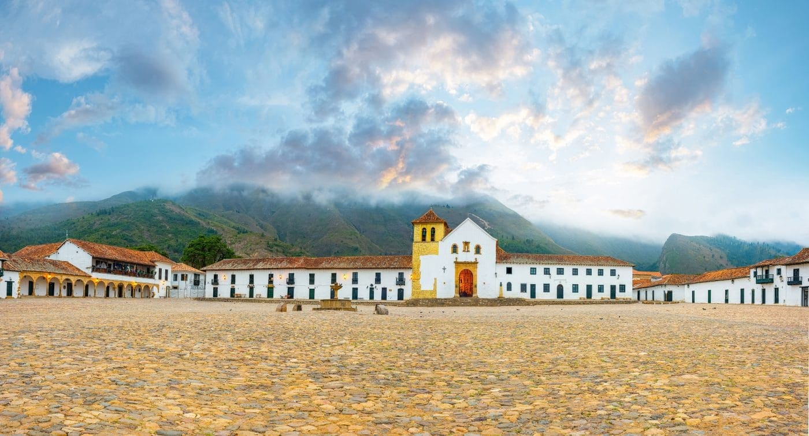

Introducción
Boyacá es un territorio diverso, con una amplia riqueza de flora y fauna, variedad de aves, todos los pisos térmicos, cinco cuencas hidrográficas, la mayor masa glaciar de Colombia y con un reconocimiento mundial por la producción de valiosas esmeraldas. Nuestros ecosistemas van desde las nieves perpetuas hasta los terrenos desérticos; páramos, lagunas, cascadas, valles y montañas, pueden ser recorridas en un entorno de paz y seguridad. Las condiciones geográficas y culturales de este Departamento permiten ofrecer maravillosas aventuras con una adecuada infraestructura; ya sea surcando los aires en parapente, escalando montañas, respirando el aire puro de nuestros páramos, liberando adrenalina en ríos y cascadas, pedaleando a 3.200 msnm o caminado por desiertos. En todo caso, queremos decirles que Boyacá, es para vivirla.
La variedad térmica y geográfica sustenta la riqueza silvestre del departamento de Boyacá, cuenta con una gran variedad de flora nativa, por ejemplo se destaca el roble, árbol insignia del territorio, esta especie es caracterizada por su altura y fortaleza, se aprecia en comunidades asentadas sobre los 1.500 y 3.000 m. s. n. m., llamadas también “robledales”, con más de trescientas mil hectáreas de páramos, correspondientes al 20% del total nacional, respaldan la reputación del departamento como epicentro de ecología y biodiversidad. Dicho ecosistema ha favorecido las condiciones para la aparición de ejemplares florísticos, entre ellos, la espeletia Paipana, la cual es una especie de frailejón endémico de las montañas que se elevan en cercanías del municipio de Paipa. Un recorrido por las zonas de páramo boyacenses representa una travesía en medio de musgos, orquídeas y pajas, que cumplen, además, funciones tan importantes como capturar y administrar el agua que surte a las quebradas y ríos del departamento.